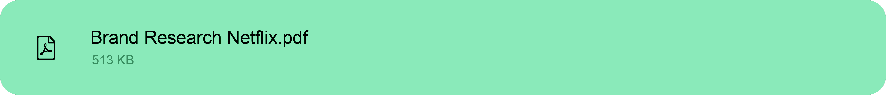

Branding


De specialisatiemodule Branding waar ik voor gekozen heb hoort bij de leeruitkomst Professional Identity. Tijdens deze specialisatie was de opdracht om een brand research te doen naar een bedrijf of product waarin je de keuze had uit 4 merken. Mijn keuze ging naar de welbekende streaming service Netflix.
Zoals ik hierboven al zei heb ik voor Netflix gekozen. Ik heb Netflix gekozen omdat het me interessant leek om hier een onderzoek over te doen. Ik vind het zelf een erg tof bedrijf en vind het ook erg fascinerend hoe dit bedrijf in zijn werking gaat en zo groot is geworden in de online entertainment branche. Naast dat hou ik van het zwart-rood contrast in hun stijl, ik keek er dus naar uit om dit toe te passen in mijn verslag.
Ik heb mijn onderzoek gedaan doormiddel van de Brand Identity Prism, het brand identity prism van Kapferer is een onderzoeksmodel waarmee bedrijven een krachtige en duurzame merkidentiteit kunnen opbouwen. Het prisma visualiseert zes aspecten van een merkidentiteit, namelijk: fysiek, persoonlijkheid, cultuur, zelfbeeld, reflectie en relatie.
Ik heb mijn onderzoek direct getypt in het programma in Adobe InDesign zo kon ik de tekst gelijk recht en netjes zetten in de lay-out.
Ik heb geprobeerd alles zo goed mogelijk te laten matchen met de branding van Netflix, denk hierbij aan de kleuren en fonts die ik
gebruikt heb in het ontwerp van mijn onderzoek. Ik heb per aspect een aparte paragraaf getypt en deze in APA stijl gezet.
Klik op de knop hieronder om mijn onderzoek te bekijken.

Dit onderzoek is niet gemaakt in word, ik heb mijn onderzoek gestijld met InDesign. Ik heb de mijn blad zwart gemaakt en dit kleurrijk gemaakt met de rode kleurcode van Netflix. De tekst in het document heb ik recht gezet doormiddel van alle lijnen te justifyen. Zo lijkt het bestand over het algemeen een stuk strakker en netter. Ik heb de foto's die ik gebruikt heb ook uitgelijnd met de teskt zodat deze even breed zijn als de tekst vakken.
Ik heb met deze opdracht een hele hoop geleerd, vooral mijn InDesign skills werden hier echt op de proef gesteld. Ik wist in het begin nog niet zo veel van InDesign af en vond het maar een vervelend programma. Toen ik er eenmaal verder mee gingen werken kwam ik er achter dat het toch een prettig programma kan zijn. Voor met het uitlijnen van foto's en tekstvakken. Naast het gebruik van InDesign heb ik ook geleerd gebruik te maken van de onderzoeks methode van Kapferer. Zo leerde ik specifieker zoeken naar bepaalde informatie die ik nodig had. Ook het gebruik van APA kwam in dit verslag weer aan bod. Elke APA oefening is weer een poging tot verbetering.
Ik kan zo even niet bedenken wat ik bij zo'n opdracht de volgende keer anders zou doen. Het enige wat ik wellicht anders zou doen is tussentijds feedback vragen. Zo kan ik die feedback die ik krijg direct toepassen op mijn onderzoek en ontwerp.
"Helder stuk Jaap, ik heb er verder vrij weinig op aan te merken. Goed werk!"
~ Berry Sanders
"Wat Berry zegt; helder en netjes gedaan!"
~ Evert van de Grift